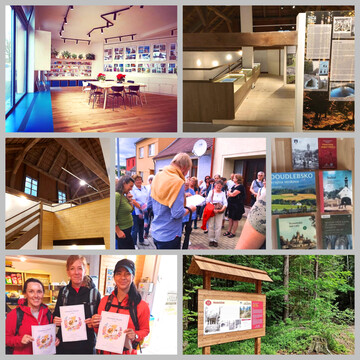

Podpora cestovního ruchu je velmi důležitá pro rozvoj regionu. Ovlivňuje trh práce – dává příležitost především rozvoji obchodu a služeb, malému a střednímu podnikání. Turistika se stala velmi významným hospodářským odvětvím. Město má cestovní ruch podporovat, ale ne na úkor svých občanů. Občané mají mít prospěch např. z širší nabídky služeb, z bohatší nabídky kulturních pořadů atd. Je potřeba si uvědomit, že turistika má být podporována tak, aby se vynaložené finanční prostředky vrátily.
Mezi významné turistické cíle patří pochopitelně i církevní stavby. Je proto velmi důležitá spolupráce mezi městem a farností. Velice si vážíme našich dobrých vztahů a vzájemné spolupráce.
přesunout Kulturní a informační centrum do nových a lépe umístěných prostor na Žižkově náměstí.
na Buškově hamru zpřístupnit podkroví stodoly a vybudovat zde novou expozici .
vyznačit novou naučnou stezku Trhové Sviny zbožné a hříšné.
v rámci mobilní aplikace Skryté příběhy vytvořit trasu věnovanou Karlu Valdaufovi.
přispět k atraktivitě města upravováním veřejných prostranství – např. Kostelní ulice, Velký rybník, stará fara.
vyznačit nové cyklotrasy v rámci projektu destinační společnosti Novohradsko - Doudlebsko.
rozšířit nabídku kulturních a společenských akcích pořádaných KIC.
vydat celou řadu publikací o historii města i o místních částech, připravit výstavy o historii města i o jejích významných rodácích.
uspořádat konferenci o prezidentovi JUDr. Emilu Háchovi.
expozici na Buškově hamru doplnit o interaktivní herní prvky.
posílit propagaci města – především moderními a zábavnými způsoby – videa, mobilní aplikace atd.
připravit projekt komunikace mezi Svatou Trojicí a kostelem Nejsvětější Trojice.
vytyčení nových cyklotras, zpracování plánu na cyklostezku.
finančně podpořit opravy církevních staveb – kostel Nanebevzetí Panny Marie i kostel Nejsvětější Trojice.
spolupracovat s farností – např. pořádání společných kulturních akcí, zajištění průvodců v obou kostelích v letních měsících.
podpořit akce zvyšující cestovní ruch – např. Svinenské výšlapy, Svinenské čtení, Kovářské dny, atd.
jako propagační materiály nabízet regionální výrobky – např. keramiku z Domečku.
být aktivní v destinační společnosti Novohradsko – Doudlebsko.